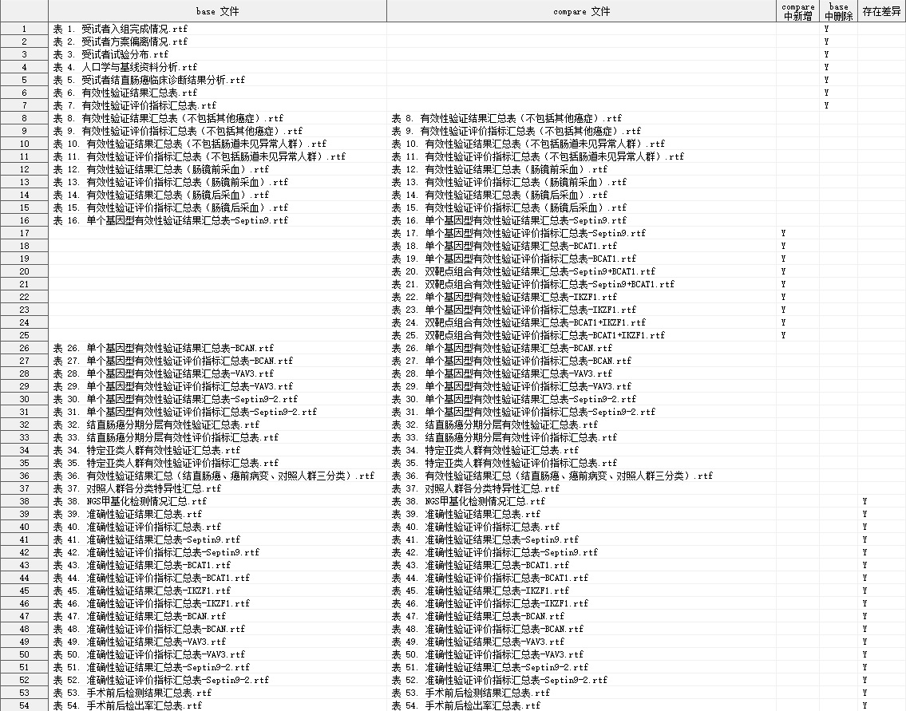

%CompareAllRTF
CompareAllRTF
比较两个目录下的所有 RTF 文件的内容。
Compatibility : RTF 1.6 specification
依赖
CompareRTF.sas -> CompareAllRTF.sas
语法
必选参数
可选参数
调试参数
参数说明
BASEDIR
Syntax : path | fileref
指定比较的 BASE 目录路径或目录引用。
[!IMPORTANT]
- 如果路径过长，应当事先使用
filename 语句为目录定义引用，再将目录引用名传入参数 BASEDIR。
Example :
BASEDIR = "~\table\draft"
filename bdir "~\table\draft";
BASE = bdir
COMPAREDIR
Syntax : path | fileref
指定比较的 COMPARE 目录路径或文件引用。
[!IMPORTANT]
- 如果路径过长，应当事先使用
filename 语句为目录定义引用，再将目录引用名传入参数 COMPAREDIR。
Example :
filename cdir "~\table";
BASE = cdir
IGNORECREATIM
用法同 IGNORECREATIM
用法同 IGNOREHEADER
用法同 IGNOREFOOTER
IGNORECELLSTYLE
用法同 IGNORECELLSTYLE
IGNOREFONTTABLE
用法同 IGNOREFONTTABLE
IGNORECOLORTABLE
用法同 IGNORECOLORTABLE
OUTDATA
Syntax : <libname.>dataset(dataset-options)
指定输出差异比较结果的数据集。
libname: 数据集所在的逻辑库名称
dataset: 数据集名称
dataset-options: 数据集选项，兼容 SAS 系统支持的所有数据集选项
输出数据集有 5 个变量，具体如下：
| 变量名 |
含义 |
| BASE_RTF_NAME |
base 文件名 |
| COMPARE_RTF_NAME |
compare 文件名 |
| ADDYN |
compare 中新增 |
| DELYN |
base 中删除 |
| DIFFYN |
存在差异 |
Default : DIFF
Example :
OUTDATA = DIFF
INDATA = CMP.DIFF
INDATA = CMP.DIFF(keep = BASE_RTF_NAME COMPARE_RTF_NAME DIFFYN)
DEL_TEMP_DATA
Syntax : YES | NO
指定是否删除宏程序运行过程产生的临时数据集，可选 YES | NO
Default : YES
[!NOTE]
结果示例
